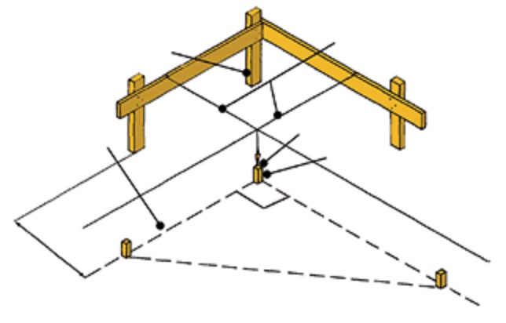
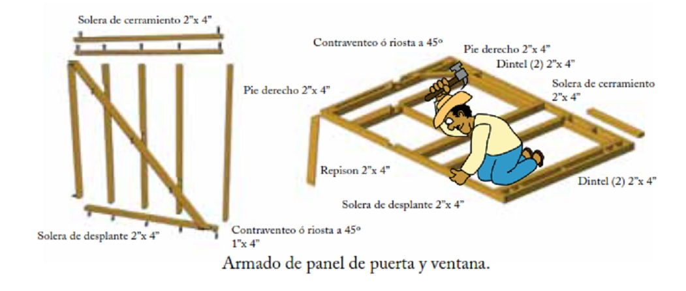

Aspectos constructivos
Dentro de estos aspectos se deben considerar las condiciones del terreno, las cuales van a determinar el costo y funcionalidad de la vivienda. Existen tres factores principales que pueden afectar el costo de la construcción de una casa:
- Las condiciones del subsuelo. Se debe buscar que el terreno sea de consistencia compacta, sin rellenos, sin aguas freáticas y de preferencia plano.
- La ubicación de la casa en el lote. Los trabajos preliminares que hay que realizar como:
- Limpieza del terreno.
- Trazo del terreno.
- Nivelación del terreno.
- Excavación del terreno.
- Desarrollo del sistema constructivo. Incluye la cimentación, el desplante de los muros, la estructuración del techo, la colocación de la cubierta, su impermeabilización, la colocación de la teja seleccionada, así como la colocación de las puertas y ventanas, sin olvidar que una vez construida la cubierta, ya se pueden colocar las instalaciones hidráulicas, sanitarias y eléctricas. Respecto a los trabajos preliminares (inciso 2), a continuación se da una ampliación de los conceptos involucrados:
8.1. Trabajos preliminares
Son los procesos a desarrollar antes de la construcción, entiéndase como los preparativos para desplantar la casa.
8.1.1. Limpieza de terreno
Para iniciar la construcción de la casa se empieza por la limpieza del terreno, para lo cual, se necesitan las siguientes herramientas: machete, carretilla, pala y pico, así como varios amigos o ayudantes que colaboren en esta labor; para ello, se quitan las hierbas, raíces, piedras, basura y todo lo que estorbe para las maniobras de la construcción.
Esta limpieza de terreno consiste en lo siguiente:
- Quitar y/o proteger árboles que lleguen a estorbar el proyecto de la casa, así como extraer las raíces.
- Remover piedras o rocas si es necesario.
- Retirar cimentaciones antiguas en su caso.
- Desmontar los arbustos o maleza que estorbe la construcción de la casa, y todo lo que estorbe para las maniobras de la construcción.
8.1.2. Trazo de terreno
Se realiza por medio de hilos y estacas para trazos rectos. Para trazos a 90 grados se usa la regla de medidas de 3 m, 4 m y 5 m como lo muestra el dibujo. Se deben trazar límites del terreno, los muros para ubicar la cimentación, la ubicación de la toma de agua, y la salida del drenaje.
8.1.3. Nivelación de terreno
El nivel de la casa debe quedar 20 cm más alto que el nivel de banqueta. Se colocan barrotes de madera en las orillas y dentro del terreno. Marcar 20 cm arriba del barrote más cercano a la banqueta y colocar otra marca 50 cm más arriba de la primera.
Para trazos de nivelación, se amarra una manguera transparente al barrote de junto, se llena de agua y coloca el nivel de agua en la última marca del primer barrote, posteriormente se marca el segundo barrote en la marca del nivel de agua del otro extremo de la manguera. De esta manera todas las marcas quedaran al mismo nivel, y servirán como referencia para la nivelación del terreno.
8.1.4. Excavación del terreno
Después de haber hecho el trazo y la nivelación del terreno, se hace la excavación de las zanjas perimetrales a una profundidad mínima de 40 cm. que van a recibir las contra trabes de concreto armado. También se hará la excavación de las zanjas de la instalación sanitaria.
8.2. Cimentaciones
Para el soporte del peso de la casa, se requiere de una cimentación que impida que la casa se hunda en el terreno y al mismo tiempo para que se proteja de la humedad del subsuelo. Para ello se requiere que el nivel superior de la cimentación, esté por arriba del terreno de 15cm a 20 cm como mínimo.
Una de las ventajas del uso de la madera en la construcción es el bajo costo de la cimentación como resultado del reducido peso de la estructura, por lo que para construcciones de uno o dos niveles es suficiente construir una losa de cimentación armada con malla electrosoldada y únicamente se requiere usar varillas de 3/8“ en las cadenas perimetrales, como se indica en la planta de cimentación.
8.2.1. Preparación de instalaciones
Ya preparada la zanja se colocan los tubos de PVC de los muebles sanitarios y se dejan listos para la colocación del armado y colado de cimentación, es decir, las tuberías deben estar colocadas previo al colado.
La colocación del tubo deberá llevar una pendiente mínima de 2% en dirección a un registro que se ubique fuera de la vivienda y al mismo tiempo sea accesible para posibles reparaciones.
Del registro se llevarán los residuos mediante tubos de concreto ya sea a la red municipal de drenaje o a una fosa séptica, recordando mantener siempre el 2% en dirección al flujo de agua.
8.2.2. Losa de cimentación
Lista la excavación y colocación de las tuberías, se procede a cubrir toda la superficie del suelo con una capa de polietileno grueso y posteriormente se tiende el armado de la losa por medio de malla electrosoldada 6x6 cm - 10x10 cm y se coloca varilla de 3/8” en las trabes perimetrales.
8.3. Muros
8.3.1. Armado de paneles
Los muros se armarán en el piso, en algún lugar cercano al terreno. Para el armado del panel de carga, se requiere usar clavo con cabeza de 3” y barrotes de madera de 2” x 4” x 8”.
Se colocan en el piso las soleras perimetrales con el fin de generar un marco con ellas. Estas se clavarán conforme se muestra en las imágenes. En el siguiente paso los pies derechos se colocarán y se procederá a clavarlos de igual forma como se muestra en las imágenes y con ello se dará rigidez al marco.
Posteriormente colocar sobre los pies derechos la riostra o contraventeo de 2” x 4” x 8´, cruzando todo el marco diagonalmente, marcando con un lápiz en los pies derechos. Hecho el trazo se quita el contraventeo y se procede a cortar 2” de profundidad, pasando por cada uno de los pies derechos para darle aun mas soporte. Los paneles de las esquinas deberán ir contraventeados y colocados en forma diagonal a 45 grados con piezas de 1” x 4”.
8.3.2. Montaje de paneles
Ya teniendo los paneles armados, proseguiremos a montarlos en la cimentación. Insertando el panel en los pernos previamente colocados e irlos montando uno junto al otro.

Ya montados los paneles perimetrales de la casa, se procede a colocar la solera de enrase de 2” x 4” sobre la solera de cerramiento, para unir los paneles y sobre la que se desplantará la estructura de la cubierta. Posteriormente se colocan los paneles internos.
8.3.3. Anclaje de paneles al cimiento
Al momento de colocar el panel en el perno de anclaje se procede a colocar una tuerca unión para sujetar la solera de desplante a la cimentación. El anclaje adecuado de esta pieza a la cimentación es básico para el comportamiento bajo fuerzas horizontales (sismo y viento), de su colocación depende el buen nivelado, las esquinas a escuadra y los pies derechos bien espaciados. En zonas de mucho viento se usan conectores de lámina galvanizada en la unión de la estructura a la solera de desplante.
La pieza que se coloca sobre la solera superior se denomina solera de enrase, que ayuda a sujetar los paneles perimetralmente con los internos. Se sujetará a la solera de enrase y se fijará con clavos de 75mm a 89mm (3” ó 3 ½”). Colocar dos clavos adicionales en los extremos de cada pieza que forma la solera de enrase.
8.3.4. Forro de paneles
Terminando de montar y anclar los paneles, tanto al cimiento como a la solera de enrase, se procede a forrar los paneles. Se pueden utilizar dos formas de forrado; con duela o con triplay.
a) Forro de duela. Se usan duelas de 1.9 cm x 15 cm x 1.22 m (3/4” x 6” X 4´), colocadas en forma horizontal. Se clavarán de forma traslapada iniciando de abajo hacia arriba; igualmente, a nivel horizontal deben quedar traslapadas respecto a los pies derechos. Se deben usar clavos de (2½”) a cada 61 cm.
b) Forrado con triplay. La segunda alternativa es el forro de los paneles con triplay de 9 mm (5/16”) x 122 cm x 244 cm, con tratamiento para exteriores.
Este proceso de forrado es favorable gracias a que se puede cubrir una mayor superficie y con mayor rapidez, al igual que brinda una gran rigidez a la estructura.
Las láminas de triplay se colocaran de forma vertical en su sentido longitudinal (244 cm). Se clavan los tableros a cada pie derecho (61 cm), con una separación entre clavos de 15 cm en los perímetros, y en la parte central a cada 30 cm. Usar clavos de 5 cm (2”).
8.3.5. Recubrimientos
a) Para duela. Al finalizar el forro de los paneles, seguirá la protección de los mismos, para ello se recomienda aplicar cualquiera de los siguientes productos:
- Pintura
- Esmaltes
- Preservadores oleosolubles
Por ningún motivo es recomendable el uso de barnices en exteriores. La aplicación será con brocha de 4” para exterior y de 2” para detallado.
b) Para triplay. Para este caso se puede aplicar una capa de mortero; el mortero consiste en una mezcla de arena y cemento portland, a la que se agregará cal hidratada para dar mayor plasticidad. Se colocará una malla de metal desplegado o malla de gallinero uniéndola a la madera con grapas o clavos con por lo menos 20 uniones por m2, entre la malla y la madera se colocará cartón asfáltico. Una opción es hacer un aplanado de 2 cm de espesor, dejarla hasta que truene y colocar sobre ella un fino, también de mortero, para dar el acabado final. Al tener un acabado de mortero permite aplicar una gran variedad de colores y texturas dependiendo del tratamiento que se dé al aplanado y a los materiales.
8.4. Techos
Para este tipo de vivienda, se tienen dos formas de estructurar el techo:
a) Estructuración a base de viga madrina y largueros. Los largueros se apoyan sobre los muros y sobre la viga madrina o viga cumbrera separados 61 cm.
b) Estructuración con armaduras. Con este sistema se puede dar un claro mayor y cambiar el sentido de la pendiente, de tal forma que se pueda obtener un pórtico más amplio en el acceso de la casa, colocando las armaduras a cada 61 cm.
8.4.1. Viga madrina y largueros
Una forma de estructurar un techo de dos aguas sin necesidad de usar tirantes es una viga cumbrera robusta, apoyada en sus extremos sobre postes o muros de carga, para soportar los extremos superiores de los largueros. Como tablón cumbrera se puede formar con uno o dos tablones de madera de pino de 2” x 10” x 12’ y colocar los largueros de madera de 2’’ x 8’’ x 16’ y recortándolos a 4.38 m separándolos a cada 61 cm.
Para armar la viga cumbrera, se necesitan 4 piezas de 2’’ x 10’’ de 3.66 m Solo 2 piezas se cortarán a una medida de 3.08 m y acoplarán como lo muestra el esquema, de manera que al final las 4 piezas unidas formarán la viga cumbrera y tendrá una medida de 4’’ x 10’’ con un largo de 6.68 m. La unión de los tablones se hace con clavos de 2 ½‘’ en tres bolillo a cada 80 cm a lo largo del tablón cumbrera.
La muesca sirve para hacer una mejor unión con la solera de amarre de los muros. Se utilizan clavos lanceros, que son 2 clavos de 2 ½” que se hincan en diagonal al larguero y lo unen con la solera.
Montaje
Después de colocados los muros y unidos con sus soleras de amarre, se puede comenzar a colocar la estructura del techo de largueros sobre el tablón cumbrera. Los paneles tímpano se colocan sobre los muros cabeceros, los cuales soportarán el tablón cumbrera que está formado por cuatro piezas de 2’’ x 10’’. También se colocará un panel adicional (Panel No. 11-B) sobre un muro interior (Panel No. 11) y también servirá de apoyo al tablón cumbrera.
Para unir la viga cumbrera y el Panel 11-B se usan unas cartelas en ambos lados de la viga. Estas cartelas se ubicarán en los extremos del panel y entre los pies derechos para evitar que estorben cuando se monten los largueros sobre la viga. Se usaran clavos de 2 ½’’.
Cuando se coloque el tablón cumbrera debe fijarse a los paneles de carga con clavos lanceros y entonces podrán colocarse los largueros (16 piezas de 2’’x8’’ de 16´). Estos se fijaran al tablón cumbrera con clavos lanceros en cada lado del larguero. Se debe verificar que estén colocados a 61 cm entre uno y otro.
Cuando se termine la colocación de los largueros, se colocará el alero para poder instalar el forro de la cubierta. Al terminar de colocar los largueros y los aleros, se empalman y colocan 3 piezas de madera de 1’’ x 8’’ de 2.44 m, llamada fascia, para cubrir los 6.68 m en las puntas salientes de los largueros, en ambos lados de la cubierta.
8.4.2. Armaduras
Los techos con armaduras, son un sistema estructural triangulado con piezas de madera de 3.8 cm de grosor y 8.9 cm o 14cm de ancho, separados a 61cm. Se necesita de algún sistema de arriostramiento que mantenga las armaduras en la posición correcta, se pueden usar piezas de madera. Con este sistema se puede dar un claro mayor y cambiar el sentido de la pendiente, de tal forma que se pueda obtener un pórtico más amplio en el acceso de la casa.
Una vez que los muros están colocados, se montarán las armaduras a cada 61 cm de separación y apoyando los extremos de la cuerda inferior sobre los muros de las fachadas laterales.
Cuando se coloquen las armaduras debe verificarse que las distancias entre ellas sea de 61 cm en ambos lados, para que los forros de las cubiertas (duela o triplay) puedan anclarse perfectamente a la cuerda superior de las armaduras. Para esto pueden fijarse temporalmente con piezas de madera (riostras) que servirán en esta fase para mantenerlas en posición recta con su correcta separación.
Mientras se colocan las armaduras se usarán piezas de madera llamadas riostras para mantenerlas fijas en una posición y una vez colocadas todas las armaduras y tímpanos, se colocarán los aleros sujetándolos de la ultima armadura y sobre el panel tímpano.
8.4.4. Anclaje de la armadura al muro
Las armaduras deberán anclarse a las soleras de los muros de manera que puedan soportar adecuadamente el viento y otras acciones que pudieran presentarse. En zonas donde los vientos sean importantes deben utilizarse conectores metálicos. En la fabricación de las cartelas de triplay se usará la misma cantidad de clavos y medidas que se muestran en la siguiente imagen; los clavos sólo son puestos en un lado y las puntas salientes se doblan sobre la cartela trasera.
8.4.5. Colocación de contravientos
Un contraventeo (arriostramiento) consiste en colocar piezas de madera de 1’’ x 4’’ sobre las cuerdas inferiores de las armaduras y otras piezas en forma diagonal sobre las cuerdas superiores de las armaduras, para darle rigidez al techo.
8.5. Cubiertas
8.5.1. Tipo de forros
Los forros son elementos apoyados sobre los largueros o armaduras de los techos y pueden ser de tableros estructurales o cubierta con forro de duela.
a) Tableros estructurales. Se puede emplear triplay o también tableros OSB, en medidas de 13mm x 1.22m x 2.44m. Se colocan sobre los apoyos y en sentido perpendicular. Se debe dejar una holgura de 3 mm entre los bordes. Deben quedar cuatrapeados y los bordes deben unirse sobre un apoyo.
b) Cubierta con forro de duela. Las duelas son piezas de madera aserrada y cepillada de ¾’’ x 4’’, que pueden tener los cantos a escuadra o machihembrados. Las duelas se colocan perpendiculares a los largueros o a la cuerda superior de las armaduras y se fijan con dos clavos de 2 ½” ó 3”. Las juntas de los extremos de la duela deben de quedar siempre sobre un larguero o armadura como se muestra en la figura.
8.5.2. Impermeabilización
Debajo de la teja asfáltica o de barro se debe colocar una capa o base impermeable. Esta capa protege contra la intemperie y mantiene seco el forro mientras se termina de colocar el recubrimiento final. Se trata de una capa de fieltro asfaltico en rollo, y deben traslaparse por lo menos 10 cm en los bordes y fijarse al forro del techo con clavos. En el perímetro de la cubierta se fija un gotero metálico con clavos de 2 ½’’ a cada 40 cm.
8.5.3. Colocación de teja asfáltica
Son más ligeras que las tejas de barro. La cubierta de madera debe estar firme, seca y lisa. Se fijan con clavos de cabeza ancha a la cubierta del techo, algunas tienen pegamento adherido en su parte inferior y son fáciles de colocar. Debe iniciarse sobre la parte más baja de la cubierta y seguir avanzando hacia arriba una vez terminada la fila inferior y traslapar una fila sobre la otra. Nunca deben aplicarse tejas en cubiertas con un ángulo inferior a 9.5 grados.
8.5.4. Colocación teja de barro
Las tejas de barro solo pueden colocarse en techos con pendiente mínima de 25%. Se debe iniciar sobre la parte más baja y avanzar de un lado al otro, la primera se colocan con la curvatura hacia arriba y separadas por listones que servirán para fijarlas sobre la cubierta. Se inicia la primera fila con la curva hacia arriba y el siguiente igual pero traslapado 5 cm sobre la fila inferior.
8.6. Puertas y ventanas
8.6.1. Instalación de puertas
Para la instalación, primero se coloca el contramarco. Para ello se usan tirantes (opcional) para mantener el marco en posición, se verifica la nivelación y se procede a clavar. Después se instala el tope o batiente; para ello se fija una pieza por el lado exterior para que la puerta quede en la posición que estará cerrada. Clavar y pegar con adhesivo el tope en el lado interior.
Para la colocación de las bisagras se marca la posición de las bisagras en la puerta (generalmente son 3), la profundidad del rebaje en la puerta debe ser igual al espesor de la bisagra.
Ya instaladas, colocar la puerta en el contramarco, usar cuñas para levantar la puerta, marcar la ubicación de las bisagras, calar e instalar la puerta.
8.6.2. Instalación de ventanas
8.7. Instalación hidráulica y sanitaria
8.7.1. Planta Instalación Hidraúlica
8.7.2. Planta de instalación sanitaria

8.7.3. Solución de instalación hidráulica
Se realizará de dos formas:
a) Captación de agua pluvial en un canalón metálico de 20cm de diámetro, posteriormente se lleva por una tubería de PVC hasta la pileta (1.20m x 1.20m x 1.50m) 2.15m³. De ese proceso se llevará el agua al W.C., regadera y lavadero. Cuando se tenga una gran captación pluvial y rebase la cantidad de agua que puede almacenar el tanque se colocará un rebosadero conectado al pozo de absorción.
b) Pozo artesano mediante una bomba eléctrica de 0.5 hp, caudal hasta 90l/min (5.4 m³/h), altura manométrica hasta 100 m, para abastecer suministro de agua a la vivienda, llevándola a la pileta de agua y a su vez se colocará una bomba que lleve el agua de la pileta al tinaco.
8.7.4. Solución de instalación sanitaria
La Instalación sanitaria se presenta en la separación de guas negras (w.c) y aguas grises (lavadero y regadera). Por ello se tienen dos posibilidades de presentar el uso de un pozo de absorción y de fosa séptica.
a) Pozo de absorción. Llegará el agua a partir de un registro que colectará las aguas grises que vienen del lavadero y de la regadera. Por otro lado también captará el agua que venga de la fosa séptica una vez ya filtrados los residuos.
b) Fosa séptica. Se proveerá de agua por un registro de aguas negras que colectará los fluidos del W.C. Al llegar a la fosa se separarán los residuos.